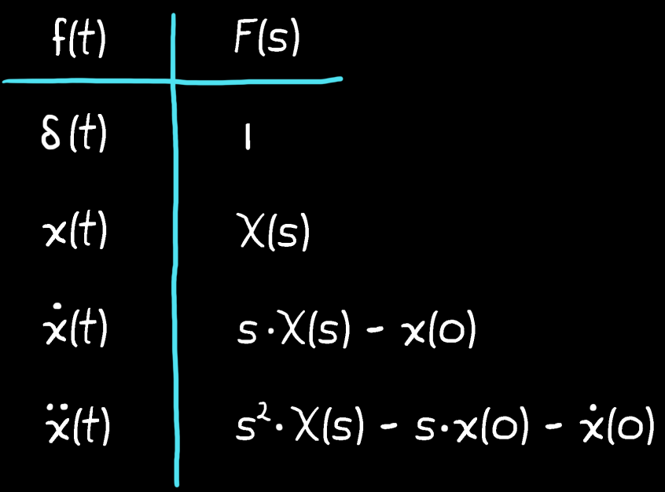

Laplace transform integration do not need to be done by hand. It has been solved for most common terms many times before and collected into tables.

Laplace transform of few common terms that can be found in a table
The time domain model can be transformed into the s domain, by replacing each term with the corresponding s domain equivalent.
Example
Consider a system in the time domain:
$$
m\ddot{x}(t) + b\dot{x}(t) + kx(t) - \delta(t) = 0
$$
Taking the laplace transform, the s domain equivalent would be:
$$
(ms^2 + bs + k) \cdot X(s) - 1 = 0
$$